Let 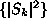 be the Fourier amplitudes, Eq.(7), of the data and 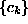 a copy of the data sorted by magnitude in ascending order. At each iteration stage (i), we have a sequence 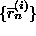 that has the correct distribution (coincides with when sorted), and a sequence 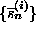 that has the correct Fourier amplitudes given by . One can start with 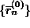 being either an AAFT surrogate, or simply a random shuffle of the data.
The step 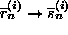 is a very crude
``filter'' in the Fourier domain: The Fourier amplitudes are simply
replaced by the desired ones. First, take the (discrete) Fourier transform of
:
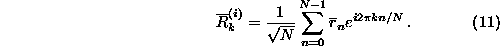
Then transform back, replacing the actual amplitudes by the desired ones, but
keeping the phases 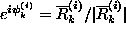:
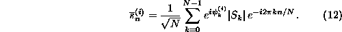
The step 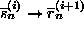 proceeds by rank
ordering:
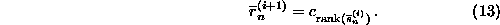
It can be heuristically understood that the iteration scheme is attracted to a
fixed point 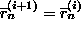 for large
(i). Since the minimal possible change equals to the smallest nonzero
difference 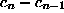 and is therefore finite for finite N, the fixed
point is reached after a finite number of iterations. The remaining discrepancy
between 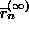 and 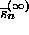 can be
taken as a measure of the accuracy of the method. Whether the residual bias in
or is more tolerable
depends on the data and the nonlinearity measure to be used. For coarsely
digitised data, deviations from the discrete distribution can lead to spurious results
whence is the safer choice. If linear correlations
are dominant, can be more suitable.
deviations from the discrete distribution can lead to spurious results
whence is the safer choice. If linear correlations
are dominant, can be more suitable.
The final accuracy that can be reached depends on the size and structure of the data and is generally sufficient for hypothesis testing. In all the cases we have studied so far, we have observed a substantial improvement over the standard AAFT approach. Convergence properties are also discussed in [30]. In Sec. 5.5 below, we will say more about the remaining inaccuracies.